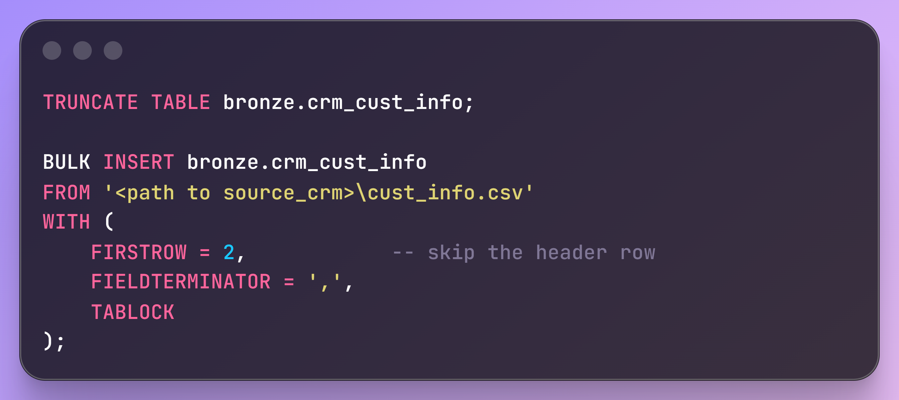
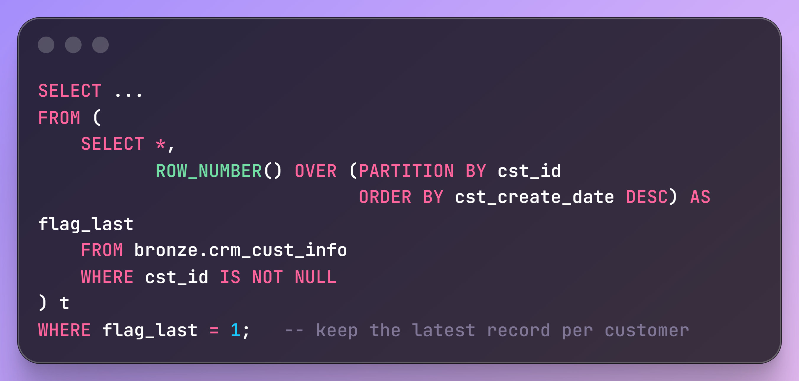
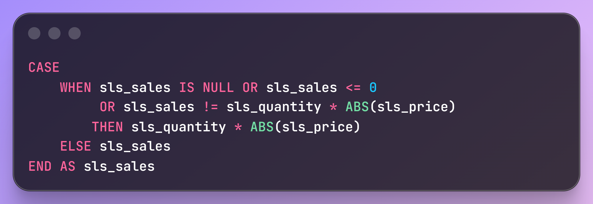
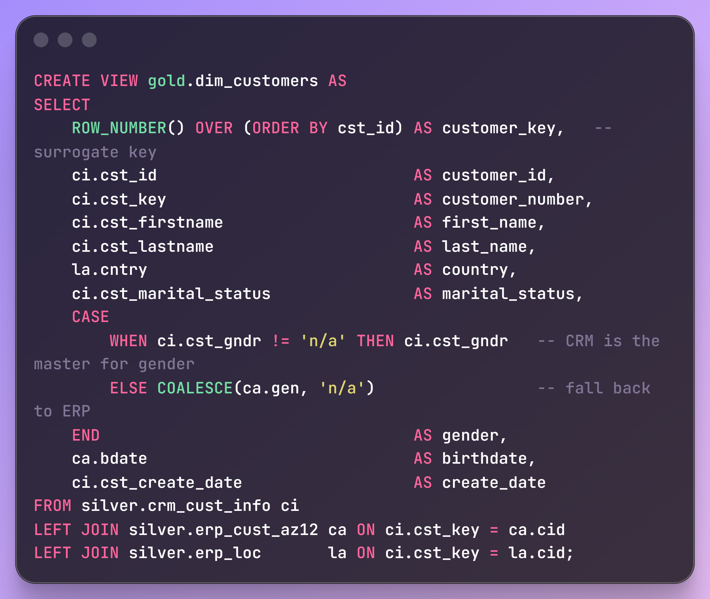
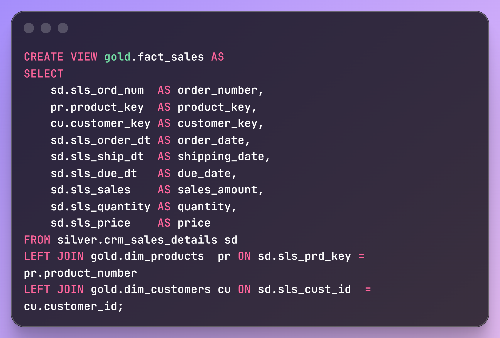
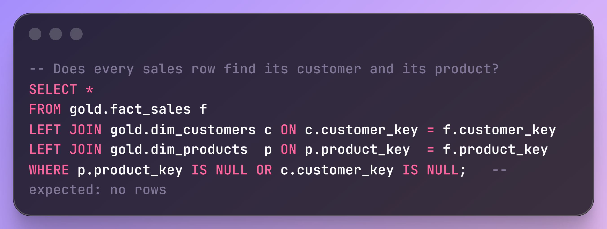

Bike Sales Data Warehouse: From CRM and ERP to Power BI
A SQL Server warehouse built from scratch. Two source systems, six raw CSV files, three layers and a star schema ready for reporting.
- SQL Server
- T-SQL
- SSMS
- Medallion architecture
- Star schema
- Draw.io
- Notion
- GitHub
Introduction
A lot of the work behind a dashboard happens long before the first chart. In this project I built that part myself: a SQL Server data warehouse for a company that sells bikes and bike accessories, starting from nothing but a pile of CSV files.
The company keeps its data in two systems. The CRM knows who the customers are, which products exist and what was sold. The ERP adds birth dates, genders, countries and the product category catalogue. Neither one can answer a business question alone, and neither is clean. My job was to bring them together into one trustworthy model that a tool like Power BI can read without anyone needing to know where a column came from.
The brief
The requirements were short and clear, so I turned each one into something I could check at the end.
| Requirement | What it asked for | How I met it |
|---|---|---|
| Objective | A modern SQL Server warehouse that consolidates sales data for reporting and decisions | A three-layer warehouse in one SQL Server database |
| Data sources | Import ERP and CRM data supplied as CSV files | Six CSV files loaded with BULK INSERT |
| Data quality | Cleanse and fix quality issues before analysis | A dedicated Silver layer, with SQL test scripts |
| Integration | One user-friendly model built for analytical queries | A star schema in the Gold layer |
| Scope | Latest data only, no history tracking | Full refresh on every load, current product versions only |
| Documentation | Clear documentation of the data model | Architecture, flow and integration diagrams, naming conventions, a written report per layer |
What I started with
Three files came from the CRM and three from the ERP. The row counts below come from profiling the files themselves.
| File | System | Rows | What it holds |
|---|---|---|---|
cust_info.csv | CRM | 18,494 | Customer ID, key, names, marital status, gender, create date |
prd_info.csv | CRM | 397 | Product versions: key, name, cost, product line, start and end dates (295 distinct products) |
sales_details.csv | CRM | 60,398 | Order lines: order number, product key, customer ID, three dates, sales, quantity, price (27,659 orders) |
CUST_AZ12.csv | ERP | 18,484 | Customer ID, birth date, gender |
loc.csv | ERP | 18,484 | Customer ID and country |
PX_CAT_G1V2.csv | ERP | 37 | Category, subcategory and whether the product needs maintenance |
The tables connect through a handful of keys, and mapping them early made every later step easier. Customers join across systems on the customer key (cst_key in the CRM, cid in the ERP). Sales join to customers on the customer ID and to products on the product key. Products reach the ERP catalogue through a category ID that is hidden in the first five characters of the CRM product key.
The architecture
I chose the Medallion approach: Bronze, Silver, Gold. Each layer has one job, which keeps the logic easy to find and easy to test.
The warehouse design I drew in Draw.io. Bronze and Silver are physical tables loaded by stored procedures. Gold is a set of views.
| Layer | Job | Object type | Load | Transformation |
|---|---|---|---|---|
| Bronze | Keep the source data exactly as it arrived | Tables | Batch, full load, truncate and insert | None |
| Silver | Clean and standardise | Tables | Batch, full load, truncate and insert | Cleansing, standardisation, normalisation, derived columns, enrichment |
| Gold | Present business-ready data | Views | None, queried live | Integration, business logic |
Keeping Bronze untouched means I can always go back to what the source really said. When something looks wrong in a report, I can trace it down through the layers instead of guessing.
How I planned and tracked it
The project moved through four tools, each used for the job it does best.
- NotionWork plan: 6 stages and 25 tasks
- Draw.ioArchitecture, data flow and integration diagrams
- SQL Server Management StudioAll the T-SQL: tables, procedures, views and tests
- GitHubEvery finished piece committed to the repository
The Notion plan is the part I would copy into any future project. Each stage has the same rhythm: understand the data, write the code, test it, draw it, commit it.
- 1Gathering requirementsAnalyse and understand what the warehouse has to do1 task
- 2Designing the data architectureChoose the approach, design the layers, draw it in Draw.io3 tasks
- 3Project initialisationDetailed tasks, naming conventions, database and schemas, Git repository4 tasks
- 4Build the Bronze layerAnalyse the sources, code the ingestion, check completeness, document, commit5 tasks
- 5Build the Silver layerUnderstand the data, cleanse it, test it, draw the integration model, commit6 tasks
- 6Build the Gold layerExplore business objects, integrate, model the star schema, add a data catalogue, check, commit6 tasks
Naming conventions
Before writing any SQL I agreed a set of naming rules and wrote them down. It is a small step that saves a lot of confusion once there are dozens of objects.
| Object | Rule | Example |
|---|---|---|
| General | snake_case, lowercase, English, no reserved words | customer_key |
| Bronze and Silver tables | <source>_<entity>, keeping the source table name | crm_cust_info |
| Gold tables | <category>_<entity> with a business name | dim_customers, fact_sales |
| Surrogate keys | <table>_key | product_key |
| Technical columns | Prefix dwh_ | dwh_create_date |
| Load procedures | load_<layer> | bronze.load_bronze |
Building the layers
Each layer got the same treatment: understand the data, write the code, test it, document it, commit it. Here they are in the order I built them.
Layer 1
Bronze: land the raw data
Bronze has one table for each CSV file, with the same columns as the source. The bronze.load_bronze procedure empties each table and bulk loads the file again, so every run is a clean full refresh.

The pattern repeated for all six files. The file path is a placeholder here.
The procedure also prints a message for each table and the load time in seconds, and wraps the whole thing in TRY...CATCH, so a failed load shows up with an error message instead of passing quietly.
Layer 2
Silver: clean and standardise
This is where most of the effort went. Before writing a single transformation I profiled every table, then wrote a fix for each problem I found. The counts below come from profiling the source files with the same rules the SQL uses.
| Table | What was wrong | What I did |
|---|---|---|
| CRM customers | 5 customer IDs appear more than once (6 extra rows). 4 rows have no ID at all. | Drop rows with no ID. Keep the latest record per customer, ranked by create date. |
| Stray spaces around 17 first names and 22 last names | TRIM | |
| Gender and marital status stored as single letters (and 4,578 blank genders) | Mapped to Male, Female, Single, Married. Anything unknown becomes n/a. | |
| CRM products | 397 rows for 295 products, because each price change is a new version. The category ID is buried in the product key. | Split the key into a category ID and a product key. Calculate each version's end date with LEAD(). |
| Product line stored as a letter. 2 products with no cost. | R, M, T, S mapped to Road, Mountain, Touring, Other Sales. Missing cost set to 0. | |
| CRM sales | Dates stored as whole numbers like 20201229. 17 order dates are invalid (zero or the wrong length). | Invalid values become NULL. The rest are converted to real dates. |
| 30 rows where sales is missing, not positive, or does not equal quantity times price. 12 rows with a missing or non-positive price. | Sales recalculated as quantity times price. A bad price is derived from sales divided by quantity. | |
| ERP customers | 11,042 customer IDs carry an extra NAS prefix. 16 birth dates are in the future. | Strip the prefix so IDs match the CRM. Future birth dates become NULL. |
| Gender written as Male, Female, M, F, or blank | Standardised to Male, Female, n/a | |
| ERP location | IDs contain a hyphen (AW-00011000). Countries appear as DE, US and USA next to full names. About 340 are blank. | Remove the hyphen. Map DE and US to full names. Blanks become n/a. |
| ERP categories | Already tidy | Loaded as it arrived |
Three techniques did most of the heavy lifting. ROW_NUMBER() picks one survivor when a customer appears more than once:

LEAD() turns a list of product start dates into proper validity windows, so every version knows when it stopped being current:

And a plain business rule keeps the sales figures honest: the amount should always equal quantity times price.
Every Silver table also gets a dwh_create_date column, filled automatically, so I can always see when a row was loaded. The load procedure follows the same pattern as Bronze: truncate, insert, time it, catch errors.
I wrote a test script for this layer too. It checks for duplicate or empty keys, leftover spaces, unexpected category values, start dates that fall after end dates, order dates that fall after ship dates, sales that do not match quantity times price, and birth dates outside a believable range. Each query is written so that it should return nothing when the data is clean.
Layer 3
Gold: a model people can use
Gold is where the two systems finally become one. I explored the six tables, grouped them into three business objects (customers, products, sales) and shaped them as a star schema, because it is easy for reporting tools to read and fast to filter.
The star schema. Sales sit in the centre, described by a customer dimension and a product dimension.
The customer dimension joins three Silver tables. The CRM is the master record, and the ERP only fills the gaps:

A few decisions are worth explaining, because they are the kind of thing someone could argue either way:
- CRM wins for gender. When the two systems disagreed, I treated the CRM as the master and used the ERP only when the CRM had no usable value. Still missing after that means
n/a. - Left joins everywhere. A customer or sale should never disappear because a supporting row is missing. If something does not match, I want to see it, not lose it.
- Surrogate keys. The dimensions get their own
customer_keyandproduct_key, so reports do not depend on source system IDs. - Current products only. The product dimension keeps only the latest version of each product (
prd_end_dt IS NULL), which gives one row per product. That matches the brief, which says history is not needed. - Friendly names.
cst_firstnamebecomesfirst_name,sls_salesbecomessales_amount. An analyst should not need a decoder ring.
The fact view then swaps the source IDs for the new surrogate keys:

| Gold view | Built from | One row per |
|---|---|---|
gold.dim_customers | silver.crm_cust_info, erp_cust_az12, erp_loc | Customer |
gold.dim_products | silver.crm_prd_info, erp_px_cat_g1v2 | Current product |
gold.fact_sales | silver.crm_sales_details plus both dimensions | Order line |
Testing the model
Golden layer has its own test script. It checks that the surrogate keys are unique, and that every row in the fact view can find both its customer and its product.

I ran these in SSMS while building each view, and the results came back as expected: no duplicate keys and no orphaned sales. These are checks I ran by hand and not an automated pipeline, which is worth saying plainly.
The repository
Everything is committed to GitHub, so anyone can rebuild the warehouse from the scripts and the sample files.
What I would improve
A finished project is not the same as a perfect one. These are the things I know about and would tackle next.
Loads are not all or nothing
Truncating a table and then inserting means that if a load fails halfway, the table is left empty or partial. Wrapping each load in a transaction, or loading into a staging table and swapping it in, would fix that.
Surrogate keys can shift
ROW_NUMBER() inside a view renumbers rows whenever the data changes. That is fine for this refresh-everything design, but a real system with stored history would need persisted keys.
One product category has no match
Seven product rows carry category ID CO_PE, which does not exist in the ERP catalogue, so their category and subcategory come through empty. I would raise that with the data owner.
No run log
The procedures print timings, but nothing records row counts or results over time. An audit table would make each load easy to verify.
Source-of-truth rules cover gender only
If the CRM and ERP disagreed on other fields, I would need documented rules for those as well.
Hard-coded file paths
The loader points at folders on my own machine, so it needs a parameter or a config step before anyone else can run it.
What comes next
The warehouse is built and tested through the Gold layer. The next stage is the part the title promises: connecting Power BI to gold.dim_customers, gold.dim_products and gold.fact_sales and building the sales dashboard on top of them. Because the model is already a star schema, that step should be mostly about the visuals and not the plumbing.
All the scripts, test queries and sample files are in the repository, so the warehouse can be rebuilt from scratch.
View the repository